작업 흐름
- 입력
- 주제 하나(등대 섬을 도는 예인선, 야시장의 푸드트럭, 산길의 제설차, 우리 회사 배달 로봇 …)
- 브리프
- 주인공 물건과 크기 · 실루엣 · 팔레트 · 앞과 뒤를 알려 주는 색 · 가는 부품, 움직이면 질량 · 속도 · 미끄러짐 · 기울기 · 엔진, 세계(바닥 재료 · 장소 · 소품 · 코스 · 카메라), 비트와 자막, 선율을 적은
BRIEF.md - 모델
- 주인공의 네 방향 픽셀 그림(
cast.js)을 깎아 만든 복셀, 회전체 · 상자 · 복셀 함수로 만든 소품. 네 그림이 서로 맞는지(잃는 픽셀 0 %) · 옆모습이 오른쪽을 보는지 검사하고, 여덟 각도와 기울기 자세를 한 장에 그린 모델 시트로 채점 - 영상
- 네 방향 그리기 → 스캔선이 지나는 줄마다 슬라이스가 떨어져 쌓이는 장면 → 1px 간격으로 닫히며 도는 스택 → 턴테이블 → 삼각 조각으로 깨지며 들어가는 세계(카메라와 함께 도는 바닥, 발자국 그림자, 물보라 · 먼지, 흔들리는 소품)
- 확인
- 모든 비트 그리기 · 빈 프레임 · 결정성 · 표면을 벗어나지 않는지 · 화면 안 · 자막 폭 · 픽셀 블록 · 회전 속도 · 미끄러짐 · 질량에 맞는 가속 · 회전보다 늦게 따라오는 차체 기울기 · 멈춰 있지 않은지 · 악보
- 출력
- 30fps 1920×1080 MP4(칩튠 · 슬라이스마다 오르는 음 · 속도를 따르는 엔진 소리 포함), 클릭하면 소리가 켜지는 라이브 페이지
node sprite-stack-short/scripts/new-short.mjs my-short --from tugboat-dawn
cd my-short
node ../sprite-stack-short/scripts/check.mjs sheet.html
node ../sprite-stack-short/scripts/check.mjs index.html --scale .5
node ../sprite-stack-short/scripts/render.mjs index.html --sheet 12 --scale .5
node ../sprite-stack-short/scripts/score.mjs index.html
node ../sprite-stack-short/scripts/render.mjs index.html --audio out/my-short.wav요구 사항: Node + Playwright Chromium, ffmpeg. 네트워크와 GPU가 필요 없습니다(28초 영상이 CPU에서 약 20초). 단계별 순서는 SKILL.md에 있습니다.
샘플
예제 「Tug at Dawn」의 비트와 전환, 모델 시트, 시작 템플릿의 스틸입니다. 카드를 누르면 그 순간의 라이브 페이지가 열립니다.
「Tug at Dawn」 28초 · 7비트
항구의 예인선 한 척이 새벽에 등대 섬을 한 바퀴 돕니다. 원본의 자동차 · 레이스 트랙과 다른 주제로 브리프부터 끝까지 만든 예제입니다(물 위에서 미끄러지고 흔들리는 배, 물보라, 반짝이는 물).
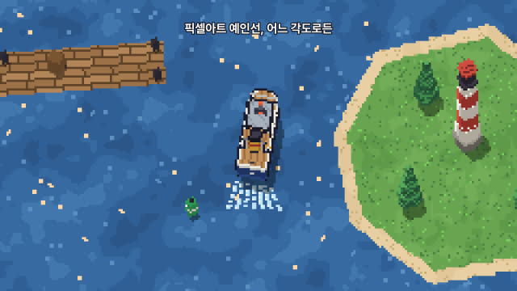
세계 · 도입등대 섬 앞출발 전 물 위에서 흔들리는 예인선
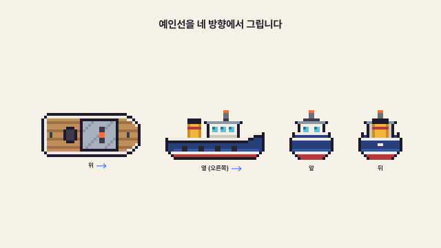
views · 네 방향네 방향에서 그리기한 줄씩 그려지는 위 · 옆 · 앞 · 뒤 그림
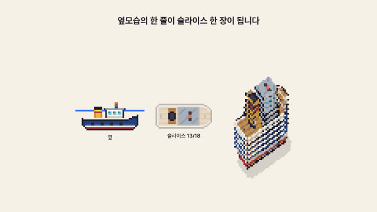
slices · 슬라이스한 줄이 한 장으로스캔선, 그 줄의 슬라이스, 떨어져 쌓이는 스택
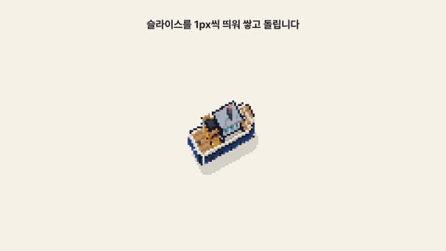
stack · 쌓기1px씩 띄워 쌓기벌어진 스택이 닫히고 돌기 시작
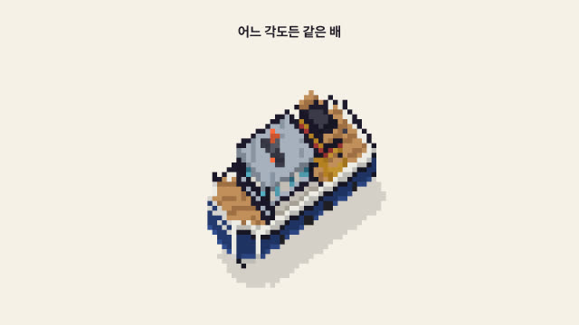
turn · 회전어느 각도든 같은 배빛을 받는 면이 회전을 따라 바뀜
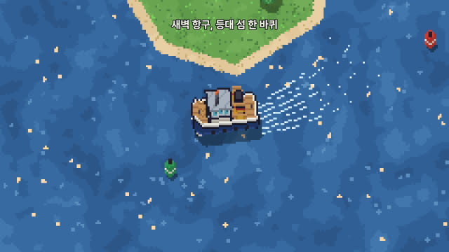
세계 · 한 바퀴물보라를 그리며미끄러지듯 도는 배, 따라 도는 카메라, 흔들리는 부표
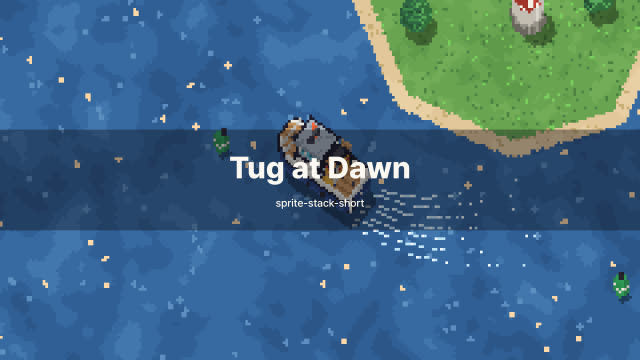
title · 제목Tug at Dawn세계 위에 얹는 제목 띠, 마지막 화음
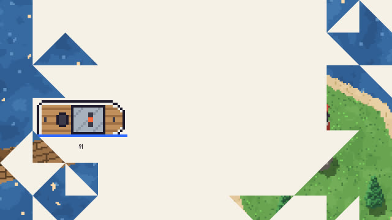
전환 · 세계 → 종이삼각 조각가운데부터 바깥으로 바뀌는 조각
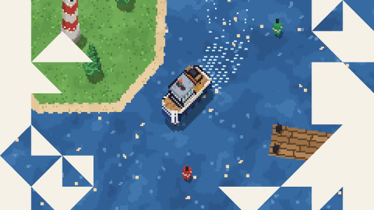
전환 · 종이 → 세계세계로 들어가기반짝이는 소리와 함께 깨지는 종이
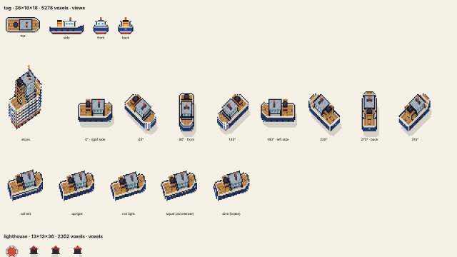
모델 시트예인선 · 여덟 각도0° 오른쪽 · 90° 앞 · 180° 왼쪽 · 270° 뒤, 기울기 자세
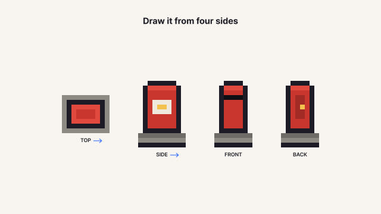
시작 템플릿 · 20.6초우체통 · 네 방향앞에는 투입구, 뒤에는 수거 문
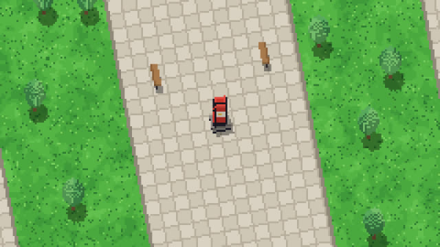
시작 템플릿 · 궤도 카메라광장의 우체통움직이지 않는 주인공은 카메라가 돎
실제 작품
이 레포에서 만든 스킬입니다. 출발점은 Kimo가 X에 올린 17초 영상 "You can turn pixel art to any angle with sprite stacking"입니다. 파란 스포츠카를 네 방향에서 그리고, 옆모습의 한 줄마다 슬라이스를 만들어 1px씩 쌓아 돌린 뒤, 레이스 트랙을 달리게 합니다. 이 스킬은 그 기법과 형식(네 방향 그림 → 슬라이스 → 쌓기 → 회전 → 세계, 삼각 조각 전환, 함께 도는 바닥)만 가져오고, 엔진과 예제 「Tug at Dawn」의 배 · 섬 · 소리는 모두 이 레포의 것입니다.
링크
- SKILL.md 워크플로
- 폴더 lib · scripts · references · templates · examples
- README.md 빠른 시작
- references/BRIEF.md 주제 → 브리프, 모델 시트 · 스틸 검토 기준
- references/LOOK.md 원본에서 읽어 낸 형식
- references/KIT.md API
- references/LESSONS.md 겪은 문제와 해결